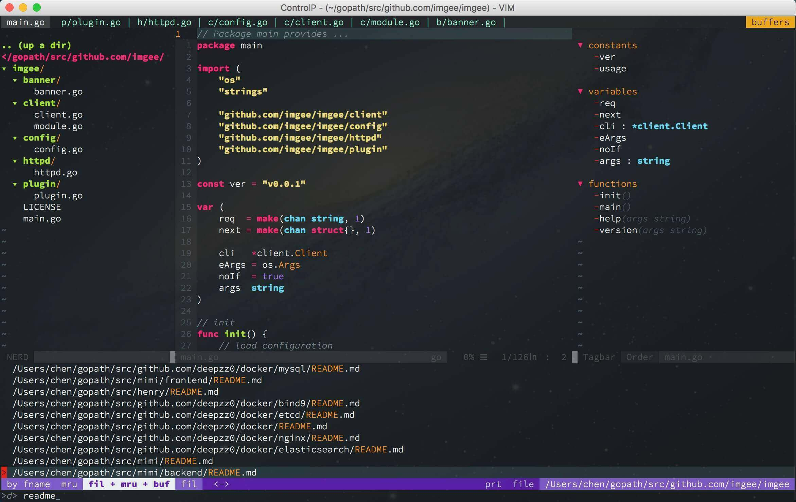

使用方式
你可以直接使用 make 命令安装或执行命令：
# 安装 homebrew
$ make homebrew
# 安装 zsh
$ make zsh
# 安装 vim 配置
$ make macvim
# 安装 neovim 配置
$ make neovim
# 安装 tmux 配置
$ make tmux
Macvim

使用流程
1、确保你已安装 tmux，且版本在 2.1 以上。
2、确保你已经安装：reattach-to-user-namespace。
3、复制或软链本仓库文件.tmux.conf 到 ~/.tmux.conf。
4、享受你的 tmux 之旅。
效果与技巧
1、前缀修改 Ctrl+b 为 Ctrl+a。
2、重新加载 .tmux.conf 文件：前缀+R。
3、滑动鼠标进入 vi 模式。
4、显示 pane 编号：前缀+q。
5、选中 pane：前缀+j/k/h/l。
6、改变 pane 大小：前缀+J/K/H/L。
7、创建新窗口：前缀+c。
8、关闭窗口：前缀+&。
9、选择窗口：前缀+窗口数字。
10、新建 pane：前缀+v/s。
11、关闭 pane：前缀+x。
12、进入复制模式：前缀+[，按 y 复制到系统剪贴板，Enter 复制到 tmux 剪贴板。
13、粘贴剪贴板内容：前缀+]。
Tmux

使用流程
1、复制或软链本仓库文件 .vimrc 到 ~/.vimrc。
2、安装 vim 插件管理器：$ git clone https://github.com/VundleVim/Vundle.vim.git ~/.vim/bundle/Vundle.vim。
3、进入 macvim，输入 :PluginInstall 安装插件。
4、编译代码补全插件 YouCompleteMe：https://github.com/Valloric/YouCompleteMe#mac-os-x。
5、享受你的 vim 编程之旅。
效果与技巧
1、打开与关闭目录 NERDTree：⌘+e。
2、相对或绝对行号显示：Ctrl+n。
3、左右切换 Buffer：H/L=>Shift+H/L。
4、折叠代码段：,+zz。
5、简单符号环绕：VISUAL 模式，选中字符，输入符号。支持：”，’，`，[]，()，{}。
6、切换窗口：Ctrl+j/k/h/l。
7、切换 Tab：,+0-9。
8、超级权限保存文件：:w!!，该命令需要快速键入，否则无效。
9、取消搜索高亮：,+/。
10、选择所有文本：,+s+a。
11、快速保存：,+w。
12、删除 Buffer：,+b+d。
13、搜索文件：⌘+p。
14、全局搜索关键词 CtrlSF：⌘+f。
15、在此打开 CtrlSF 结果：:CO。
16、批量注释代码：⌘+/。
17、显示 Tagbar：⌘+y。
18、选中代码片段 Ultisnips：TAB。
19、批量选中，批量修改：Enter。
更多详细请查看 .vimrc 内容。